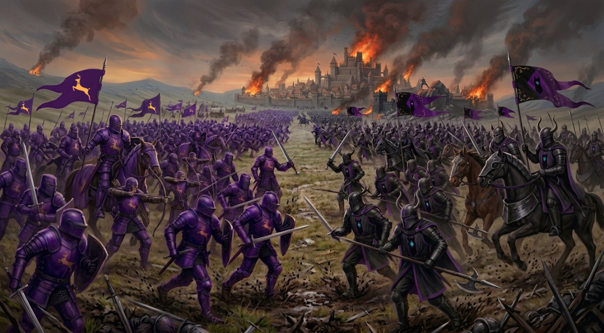

Pouco se fala nos livros sobre o motivo por tras do ataque direto do reino de Niwdem ao reino de Dyllewalt, e isso tem haver com um conflito milenar entre uma familia, uma profecia e um segredo muito bem guardado. Mas não foi apenas essa questão mágica, na verdade, Eras antes, precisamente desde a Era de Bronze, Dyllewalt e Niwdem trocam farpas, algumas delas ligadas a religião, já que a familia real de Niwdem cultua o deus Nabulork e Triohnte cultua Haragum, ambos os reinos, monoteístas, no entato com deuses ligados a lados diferentes da mesma história. O conflito nunca antes havia escalado para um ataque direto, mas Niwdem quebrou esse fato enviando tropas para invadir o continente.
Como eles entram sem resistência?
O continente de Triohnte havia recem saido de uma guerra com um preterido herdeiro ao trono do reino de Agaroff, Ikholar Vheynnaris, um jovem esquecido, exilado em Queóbia por seu pai, Saygon Vheynnaris. Ikholar retornou do exílio com um exército numeroso, saqueou cidades, reduziu Darmalyan, capital de Agaroff a escombros, matou seu irmão: Eknnor Vheynnaris e esposa e tomou a cidade, enquanto fazia isso, seu exército avançava contra os soldados de outros reinos. Mais tarde foi morto por Lobin Hayght e seu exército foi subjulgado ao poder do novo regente. Nessa "brincadeira", Agaroff, Kwazahdar, Castindell e Dyllewalt perderam força militar com baixas significativas; prato cheio para Niwdem que assistia tudo de longe, munido com informações enviadas por seus espiões em solo triohntino.